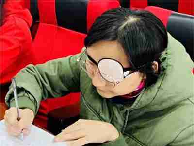

ET-概要

外貌
ET体型偏瘦，手指纤细（且经常带有创口贴），下巴突出，发际线较高，笑的时候会出现苹果肌。
右图是ET的简笔画。右图就是ET的招牌动作之一。ET穿的是比较经典的MC外套。
更多内容详见：ET装备。
惩罚手段
ET的惩罚手段简直五花八门（见下表），不过最常见的方法就是使用软尺。
| ET惩罚手段 | |||
|---|---|---|---|
| 方式 | 概括 | 使用它的年级 | 常用度 |
| 软尺 | ET上课的必备神器，凭借一把软尺征服全班 | 4、5、6 | |
| 罚站 | 站后面 | 4、5 | |
| 站前面 | 4、5、6 | ||
| 站门口 | 4、5 | ||
| 全班站 | 4、5、6 | ||
| 蹲 | 在“手举起来”事件中被首次使用，并在六年级复苏 | 6 | |
| 找林老师 | 看谁不顺眼就说：“林煜昕，带他去隔壁找林老师。” | 6 | |
| 抄单词 | ET会说：“来，带上英语书和英语作业纸，去五楼办公室把单词抄三遍。” | 4、5、6 | |
| 找林老师 | 看谁不顺眼就说：“林煜昕，带他去隔壁找林老师。” | 6 | |
| …… | |||
详见：ET日常。
经典
ET在课上闹出的大事，叫做经典。
ET的经典有：
版本过低：ET在某次点击“f”时，出现的不是课文动画，而是“版本过低”的提示。后来，ET升级了“f”，不料再次“版本过低”。于是，ET在课上升级起了“f”。
打陈昊圻：ET叫陈昊圻把东西放到讲台上无果，于是她将陈昊圻又是推又是拽的，还不停的骂他。
手举起来： 同学们因“women”与“吴一鸣”读音相近而议论纷纷，ET叫起立三次无果，于是让大家把双手举起，并在放学后拖堂到清校后。
师生互怼：因学生讲话，ET大怒，在午餐班冲其大喊，那人反而对ET，于是ET便“口吐芬芳”。
思想品德：ET因郑权楷抱作业的问题而叫来别班学生，并在课上对大家讲道理、辱骂，还说出了“你们这是思想品德的问题”这个名句。
一怒之下：考试时，同学们看不清试卷上的某张图片，ET解答了问题却反遭笑话，于是ET把声音最大的陈睿卓骂了一顿，甚至将他的新启航从四楼扔下去。MT来后，ET对其解释道：“我一怒之下把他的新启航扔到了楼下。”
详见：ET经典。
ET珍贵影像
注：图片来源于东升小学官网。
